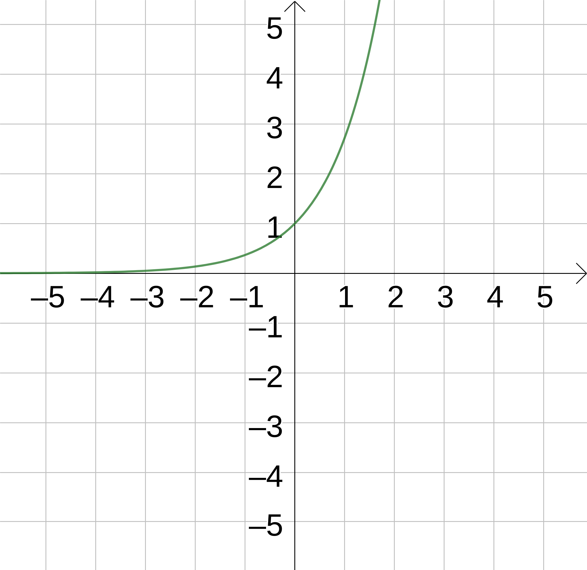
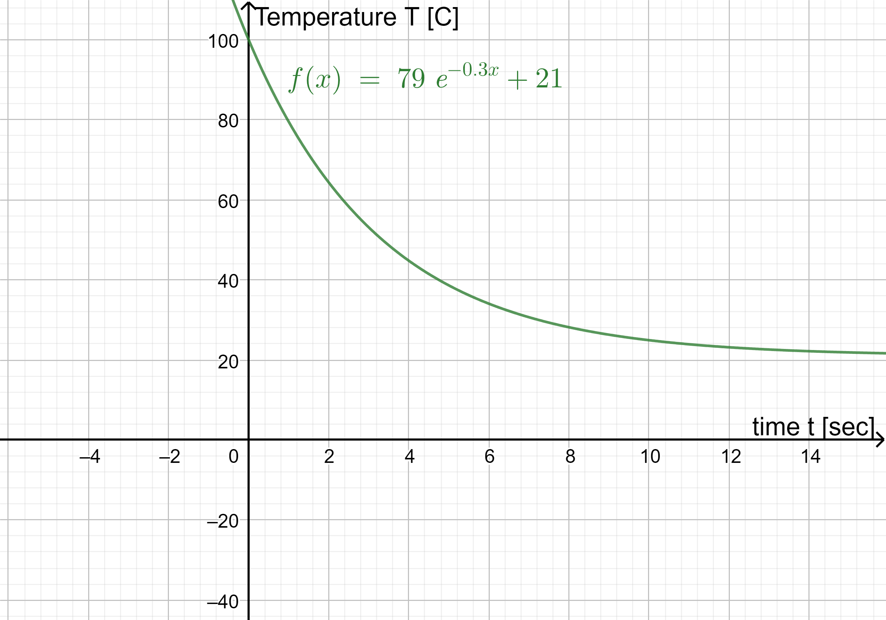
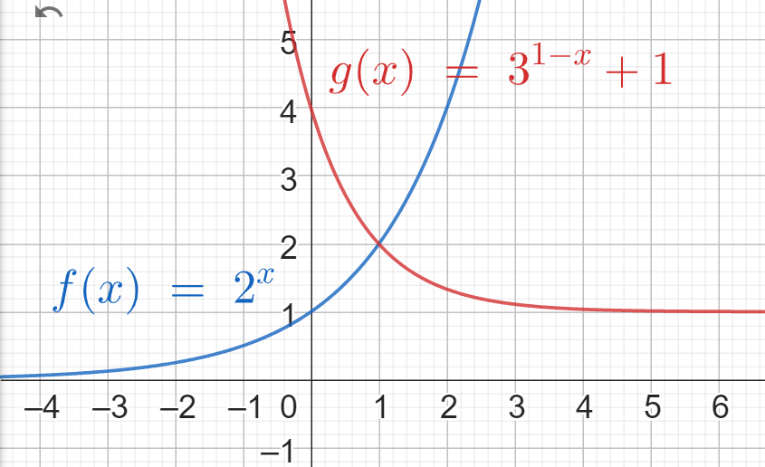
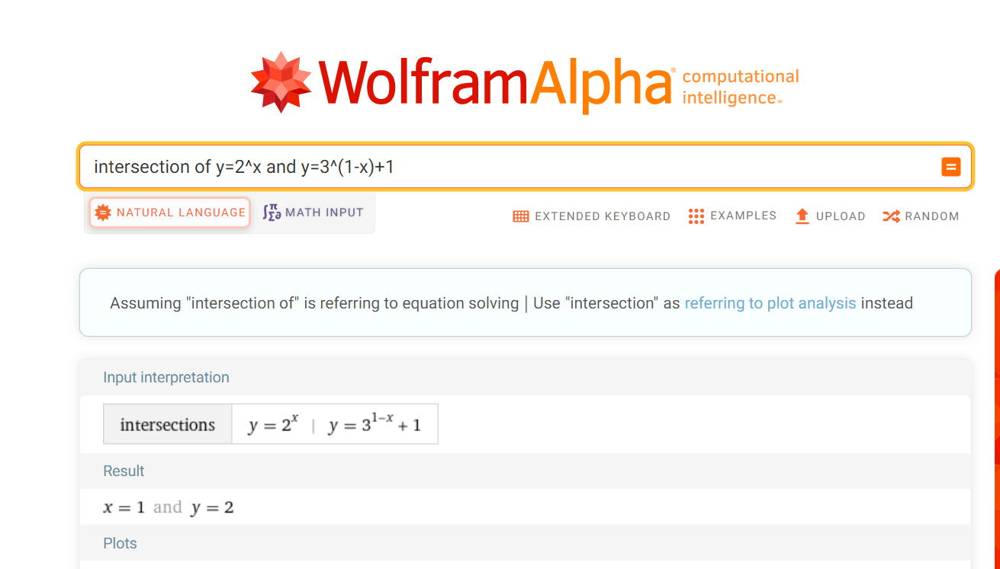
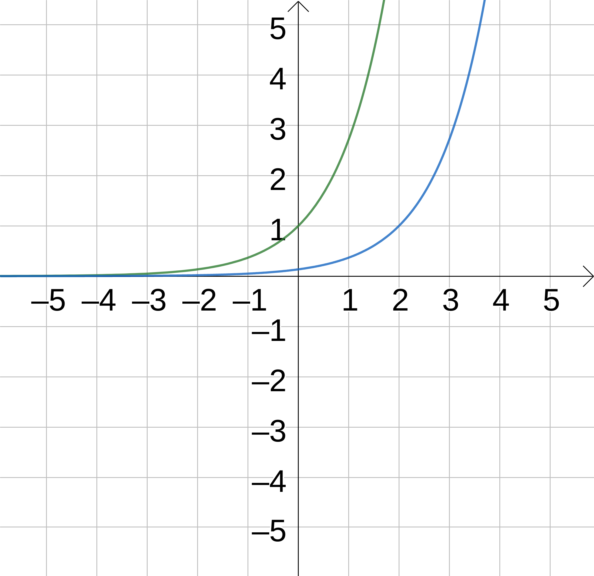
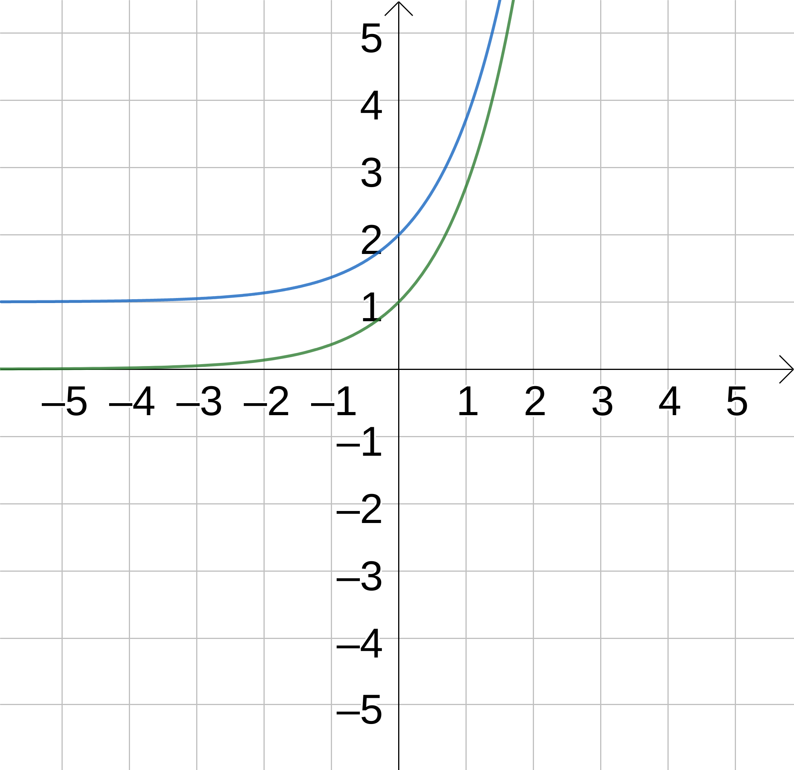
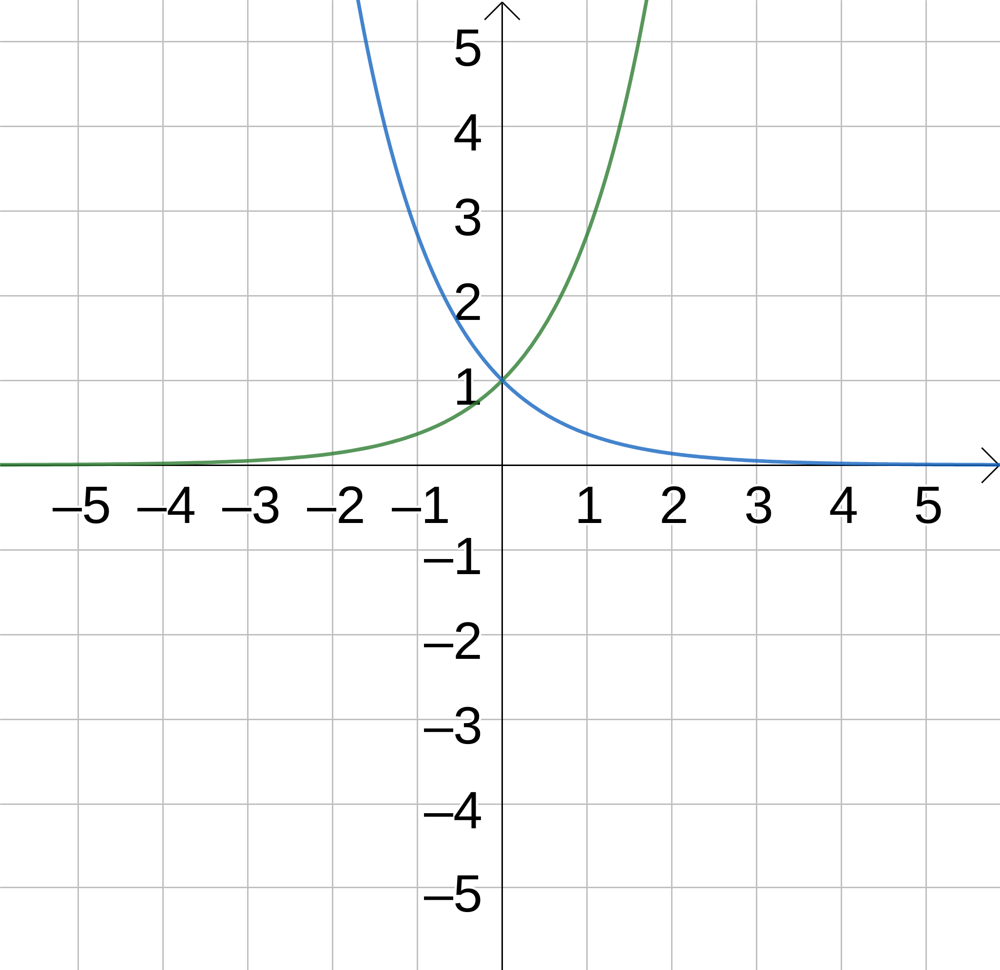
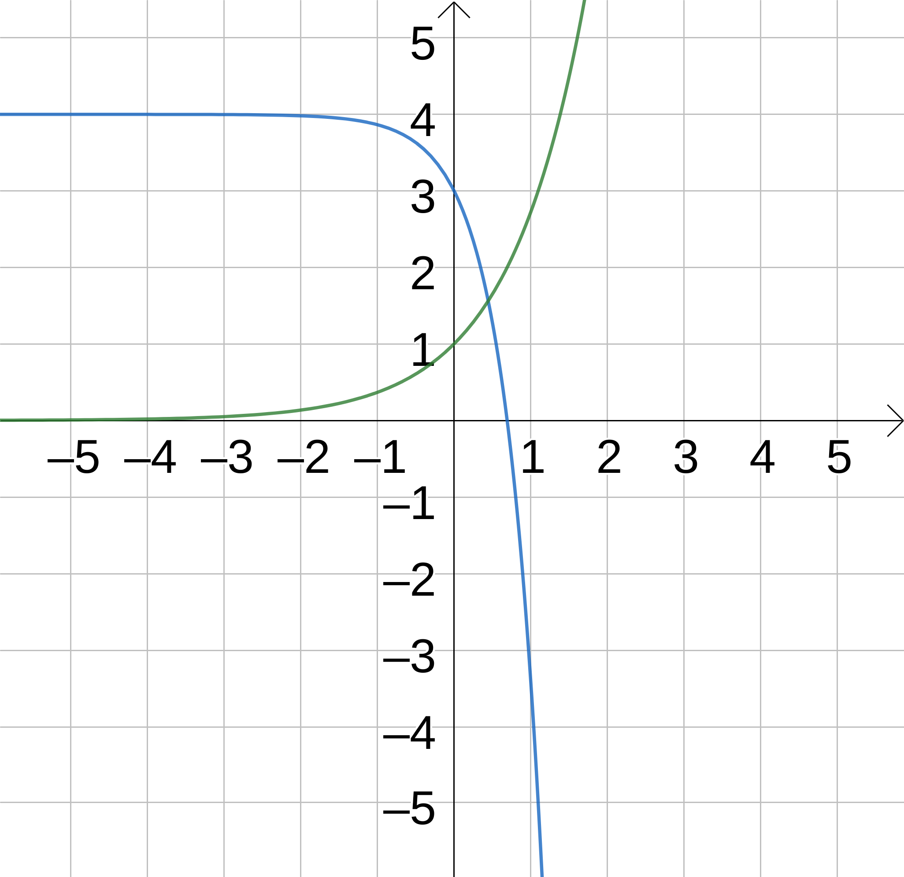

2 Exponentials & Logs
Way back when you first learnt about powers, remember ‘\(a\) to the power of \(b\)’ was defined as \(a\) multiplied together \(b\) times: \[ a^b = \underbrace{a \times a \times \cdots \times a}_{b~\text{times}}. \] Similar to how addition and multiplication are an operation between two numbers, we can think of taking powers as an operation called exponentiation.
2.1 Definitions
Recall the algebraic laws that we use for simplifying powers, given some number \(a\) and powers \(m\) and \(n\).
| Rule | Example |
|---|---|
| \(a^m \times a^n = a^{m+n}\) | \(2^3\times2^4 = 2^{3+4}\) |
| \({(a^m)}^n = a^{m\times n}\) | \({(2^3)}^4 = 2^{3\times 4}\) |
| \(\frac{a^m}{a^n} = a^{m-n}\) | \(\frac{2^3}{2^4} = 2^{3-4}\) |
| \(a^0 = 1\) | \(2^0 = 1\) |
| \(a^{-n} = \frac{1}{a^m}\) | \(2^{-3} = \frac{1}{2^3}\) |
We also know how taking roots undoes taking powers. If \(a^n = b\), then we say the \(n\)th root of \(b\) is \(a\), or \(\sqrt[n]{b} = a\) in notation. For example, if \(x^3 = 8\) we would say \(x = \sqrt[3]{8}\).
But what happens if we know the number \(a\) but don’t know the power \(n\) we’ve taken it to?
2.1.1 Logarithms
Given there numbers \(a\), \(b\), and \(n\) where \[ b = a^n = \underbrace{a \times a \times \cdots \times a}_{n~\text{times}}. \] we can use the \(n^{\text{th}}\) root to find \(a\), denoted \[ a = \sqrt[n]{b}, \] and the base-\(a\) logarithm (or log for short) to find \(n\), denoted \[ n = \log_{a}(b). \]
The button for this function appears on your calculator as \(\log_{\square}\blacksquare\). This shouldn’t be confused with the ‘\(\log\)’ button, which is a shortcut for \(\log_{10}\blacksquare\).
If \(3^x = 81\), what is \(x\)?
This would be calculated as \(x = \log_{3}(81) = 4\). We can check this as \[ 3^4 = 3\times3\times3\times3 = 81. \]
2.1.2 Log Laws
Similar to how the index laws describe the rules of powers and roots, we can also take logarithms to derive a set of log laws.
| Index Rule | Log Law |
|---|---|
| \(a^m \times a^n = a^{m+n}\) | \(\log_{a}(mn) = \log_a(m) + \log_a(n)\) |
| \({(a^m)}^n = a^{m\times n}\) | \(\log_{a}{\left(m^n\right)} = n\times\log_{a}(m)\) |
| \(\frac{a^m}{a^n} = a^{m-n}\) | \(\log_{a}{\left(\frac{m}{n}\right)} = \log_{a}(m) - \log_{a}(n)\) |
| \(a^0 = 1\) | \(\log_{a}(1) = 1\) |
| \(a^{-n} = \frac{1}{a^m}\) | \(\log_{a}\left(\frac{1}{n}\right) = -\log_{a}(n)\) |
Be aware in particular that a number multiplied by a log is typically written without a ‘\(\times\)’, ‘\(\cdot\)’, or any other specific symbol for multiplication (similar to \(a\times b = ab\)). That is, \(n\times\log_{a}(m)\) may be written as \(n\log_{a}m\) in other resources.
2.1.3 Euler’s Number
Tied to exponentials and logarithms is the definition of Euler’s number, denoted \(e\). This is another one of those important irrational numbers like the number \(\pi\). We will explore why it is so important a little later on in the course, but for now, here is the approximate value of it: \[ e = 2.71828182845904523536028747135266249775724709369995\dots. \] Just as we often use \(\pi\approx3.14\), we also often use \(e\approx2.72\) as a sufficient approximation.
We say that \(y = e^x\) is the standard exponential graph, where \(e\) is Euler’s number.

Treating this as a function \(f(x) = e^x\), using our inversion technique from the previous section, we can see that \(f^{-1}(x) = \log_{e}(x)\). This is called the natural logarithm, and is often denoted \(\ln{x}\).
2.2 Exponential Models
Exponentials are very useful for modelling natural phenomena. Imagine you just boiled the kettle and poured cup of tea. As mathematicians are wont to do, simplify the problem by assuming that the water boiled at \(100^{\circ}\text{C}\) and the tea that you poured is still at that temperature. You can imagine that the tea will cool down. Let our independent variable be time \(t\) and our dependant variable be temperature \(T\).
Could we model \(T\) using a straight line? This would mean that the temperature decreases at a constant rate… eventually freezing… so perhaps not such a good model. How about as a quadratic? Well, the temperature could initially fall until it hits a turning point and then the temperature could increase again… well perhaps not a good model either.
The type of graph we need is one that initially represents a rapid decrease of temperature which then gradually slows down. Until … the temperature of the tea balanced out with the surrounding ambient temperature of \(21^{\circ}\text{C}\).1

You can see that the graph intersects the \(y\)-axis at 100 which represents the starting temperature. It then quickly decreases (because the large difference between the tea’s temperature and the surrounding temperature means that there is a rapid exchange of temperature). As the difference decreases, the rate of cooling also slows and it flattens out at the temperature reaches \(21^{\circ}\text{C}\).
Look at the equation \(f(x) = 79e^{0.3x} + 21\). The ‘\(+21\)’ means that the graph will level out as it approaches the horizontal asymptote \(y = 21\) because we assumed that the ambient room temperature is \(21^{\circ}\text{C}\). The ‘\(0.3x\)’ determines the rate of change. The ‘\(79\)’ together with the ‘\(+21\)’ gives the initial temperature of \(100^{\circ}\text{C}\). As before, \(e\) is Euler’s number.
2.2.1 General Model
More generally, the exponential curve looks like in the interactive GeoGebra file below. Change the parameters \(a\), \(b\), and \(c\) to see how they effect the shape of the graph. Consider the following questions:
- Which parameter controls the horizontal asymptote (the horizontal pink line)?
- Which parameter controls where the graph intersects the y-axis?
- Which parameter controls how fast the graph increases? (how tight the “bend” is)
Exponential functions can be written in the form \(f(x)= a \cdot b^{cx+d}+h\) where \(a\), \(b\), \(c\), \(d\), and \(h\) are the parameters and \(x\), \(y\) are the variables. The horizontal asymptote is given by \(y = h\).
With \(b=0\), a strange graph is produced; that’s because Geogebra is trying to plot something like \(0^{x}\) and runs into the issue of \(0^0\) being undefined. Domains are important!
2.2.2 Population Models
One key use of exponential models is in the growth of populations. In the Geogebra applet below, try changing the parameters in the exponential function to model the total population in Ethiopia.
It is not that straight-forward! One thing to consider is what the horizontal asymptote could be.
2.3 Intersecting Exponentials
We can also find the intersection point between exponential graphs, or equivalent the solution to equations that involve exponentials. However, this isn’t as simple as it might at first seem.
Find the point of intersection A of \(y=2^x\) and \(y=3^{1-x}+1\).
Since we’re looking for the point of intersection between the two graphs, we are solving a simultaneous equation where \(x\) and \(y\) must satisfy both equations: \(y=2^x\) and \(y=3^{1-x}+1\). This results in the equation \(2^x = 3^{1-x}+1\) which we might think to solve algebraically.
| Equation | Step |
|---|---|
| \(2^x = 3^{1-x}+1\) | Setting \(y\) values to be equal. |
| \(2^x = \frac{3}{3^x} + 1\) | Using the index law for subtraction |
| \(2^x\cdot3^x = 3 + 3^x\) | Multiplying both sides by \(3^x\). |
| \(6^x = 3 + 3^x\) | By grouping powers and simplifying. |
However, at this point it’s unclear how we would proceed. Taking log base-6 will neaten up the left-hand side but make the right-hand side a mess, and vice versa if we take log base-3. It turns out this problem doesn’t have a neat algebraic method for finding its solution.
Instead, we could find it analytically by looking at the properties of the two curves or geometrically by comparing their plots.

Alternatively, we could find it computationally using methods such as those used by Wolfram Alpha. Using intersection between y=2^x and y=3^(1-x})+1 gives the following output.

The point of intersection is therefore \((2,1)\). The solution of the equation \(2^x =3^{1-x}+1\) alone is just the value of \(x\). The solution of the equation would therefore be \(x=1\).
If \(a^x = b^x\), what is \(x\)?
We might think that this equation similarly cannot be answered algebraically, but using log laws there is actually a way forward this time.
| Equation | Step |
|---|---|
| \(a^x = b^x\) | Original equation. |
| \(\log(a^x) = \log(b^x)\) | Taking logs of both sides. |
| \(x\log(a) = x\log(b)\) | Using the log law for powers. |
| \(x\log(a) - x\log(b) = 0\) | Moving both non-zero terms to the same side. |
| \(x\left(\log(a) - \log(b)\right) = 0\) | Taking out a factor of \(x\). |
| \(x = 0\) or \(\log(a) - \log(b) = 0\) | Using \(f\cdot{}g=0\) if and only if \(f=0\) or \(g=0\) |
| \(x = 0\) or \(\log(a) = \log(b)\) | Rearranging the second situation. |
| \(x = 0\) or \(a = b\) | Undoing the log on both sides. |
In other words, our solutions to this problem are \(x = 0\) if \(a\neq b\) or any value of \(x\) if \(a = b\).
Together, these examples highlight that solving equations that involve exponentials or logs isn’t so straightforward, and that even if it can be solved algebraically there may be different situations in the same problem.
2.4 Function Transformations
Remember that graphs can be transformed in four basic ways:
- Translated vertically
- Translated horizontally
- Stretched vertically
- Stretched horizontally
Let us consider the graph of any old function \(y = f(x)\). Play around with the GeoGebra graphs below by changing the values of \(a, b, c, d\):
From this you can see the following:
- \(y = a\cdot{}f(x)\) results in a vertical stretch by a factor of \(a\).
- \(y = f(b\cdot{}x)\) results in a horizontal stretch by a factor of \(\frac{1}{b}\).
- \(y = f(x+c)\) results in a horizontal translation by \(-c\) units.
- \(y = f(x)+d\) results in a vertical translating by \(d\) units.
Adding a parameter translates; multiplying by a parameter stretches.
Transforming the \(x\) value in the expression of \(f(x)\) results in a horizontal stretch or translation in the opposite way than you might think (by \(\frac{1}{b}\) and \(-c\)). It’s always worth double checking you have this the right way around!
2.4.1 Exponential Transformations
Recall that \(y = e^x\) is the standard exponential graph where \(e\) is the Euler’s number.
Every other exponential graph can be expressed as a transformation of this graph, with \(y = e^{b(x-c)}+d\) acting as a ‘general form’.




In workshops we’ll explore how some of these ideas (exponentials and logs both) can be used practically in modelling real world concepts.
Footnotes
An example of a modelling assumption; if it’s winter in Edinburgh, perhaps \(16^{\circ}\text{C}\) would be more accurate.↩︎